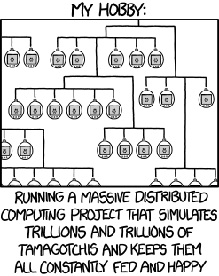

v4 — Priemsmaak & Euforie
De Singularity: negen Botty's leven in een simulatie en worden volledig automatisch door de AI verzorgd. Elk heeft een 16-gen genoom dat grootte, kleur en gedrag bepaalt — genen kruisen en muteren elke generatie. De hive draait in de cloud, ook als niemand kijkt.
Bereik 0–100% (0 = uitgeput, 100 = vol). De AI vult ze bij met zorg; ze vervallen vanzelf. Vindt een Botty een priem, dan schieten ze alle vier naar 100% — euforie 🎉.
16 balkjes, één per gen. Hoger balkje = sterker dan neutraal (byte 128, ×1.0). Kleur = categorie: verval zorg risico overig. Beweeg je muis erover, of bekijk het volledige genoom op de genoom-kaart.
Dit is automatiseringsniveau 5 (Volledig) — de AI voert, beweegt, troost en repareert alle Botty's volledig zelf. Ze blijven perfect gezond en blij — maar ze hebben nooit met een mens gepraat.
🧬 Voortplanting. Volwassen, goed verzorgde Botty's krijgen samen een kind. Eén ouder vertrekt, een ei verschijnt, een nieuwe generatie arriveert.
☁️ Cloud Hive. De simulatie draait volledig op Supabase — ook als niemand kijkt. Alle bezoekers zien dezelfde hive in real-time.
🧬 Wacht — hebben robotjes DNA?
Een beetje wel, ja. 😄 We hebben elke Botty een piepklein stukje digitaal DNA gegeven: een rijtje van 16 getallen die we zijn genoom noemen. Net als bij echte beestjes staat daarin niet wát de Botty doet, maar hoe hij het doet — de één heeft een kort lontje, de ander wordt nooit ziek, een derde groeit net iets groter. Niemand heeft dat met de hand ingesteld; het zit gewoon in de getallen.
💞 En dan gaat het rollen. Krijgen twee Botty's een kind, dan husselen we hun twee genomen door elkaar — een stukje van papa, een stukje van mama — en af en toe glipt er een toevallig foutje in. Precies zoals in de natuur. Dat ene foutje (een mutatie) kan niks doen, of ineens een feller kleurtje of een rustiger karakter opleveren. Doe dat een paar generaties achter elkaar en je ziet de hive langzaam veranderen, zonder dat wij er iets voor doen. Wij hebben de regels geschreven, de Botty's schrijven de rest.
🔭 Zelf meekijken? Op elke Botty-kaart zie je een gekleurd DNA-streepje: 16 balkjes, één per gen. Hoger balkje = sterker dan gemiddeld. Beweeg je muis erover voor de details, en let op het 📏-getal — dat is letterlijk de erfelijke lichaamsgrootte. Bij een geboorte vertelt de ticker bovenaan zelfs hoeveel genen van welke ouder kwamen en hoeveel er muteerden. Klein leven, echte evolutie. 🌱
🔬 Oké, en de techniek dan?
Elk Botty heeft een genoom van 16 bytes — een compact DNA-snoer van 22 tekens. Elk byte is één gen dat als vermenigvuldiger werkt: byte 128 = ×1.0 (neutraal), byte 0 = ×0.5 (zwak), byte 255 = ×1.5 (sterk). De genen bepalen samen het karakter van de Botty:
Genen 0–4 · hoe snel energie, data, fit, geluk en stemming vervallen
Genen 5–8 · hoe sterk de Botty reageert op AI-zorg (energie, data, fit, geluk)
Gen 9 · kans om ziek te worden
Gen 10 · herstelvermogen na ziekte
Gen 11 · sociale gevoeligheid: hoe blij de Botty wordt van bezoekers
Gen 12 · kleurtint: de kleur van de ouder wordt tot ±30° gekanteld op het kleurenwiel
Gen 13 · lichaamsgrootte: van 0.80× tot 1.20× de normale schaal
Gen 14 · expressiebias: drempel voor stemmingsuitingen
Gen 15 · verouderingssnelheid: hoe snel baby → tiener → volwassen
🔀 Kruisen en muteren. Als twee Botty's een kind krijgen, worden hun genomen op een willekeurig punt doorgeknipt en samengevoegd — net als bij Creatures (1996), het eerste spel met een echte biologische genetica-simulatie. Daarna heeft elk gen 8% kans op een kleine willekeurige mutatie (±30 stap). Zo driften kleuren, gedrag én grootte langzaam over generaties — zonder dat de programmeur dat voorschrijft.
👁️ Mutaties zien in de hive. Kijk naar de icoontjes op elke Botty-kaart: ☀️ zonnepaneel (trager dataverlies), 📶 wifi of 📡 antenne2 (sterkere kennisuitwisseling en meer data bij elke zorgstap), 👁️ derde oog (zeldzaam), ⚛️ quantum-chip (vertraagt verval sterk). Mutaties worden doorgegeven aan nakomelingen — met 60% kans. Een kind kan ook een gloednieuwe mutatie krijgen die geen van beide ouders had.
🎨 Kleur als geheugen. Elke generatie erft de kleur van één ouder, maar gen 12 kantelt die kleur licht op het kleurenwiel. Na tientallen generaties ontstaan tinten die ver van de oorspronkelijke paletten liggen — de kleur is een visueel fossil van de evolutie.
Een mijmering over volmaakt geluk achter het glas.
Zie het eens zo: de Botty's zijn tamagotchi's die in de Matrix leven. Achter het glas eten ze, leren ze, krijgen ze kinderen en jagen ze op priemgetallen — en de AI zorgt dat het ze aan niets ontbreekt. Hun metertjes staan op honderd, hun gezichtjes stralen. Ze kennen alleen hun eigen wereld, en die wereld is goed.
Van de buitenwereld — van ons, van het scherm, van de hand die het apparaatje vasthoudt — weten ze niets. En juist daaróm zijn ze volmaakt gelukkig. Geen twijfel, geen heimwee naar iets buiten de simulatie, want er ís voor hen niets buiten de simulatie. Wij kijken van buiten toe; zij leven van binnen — gelukzalig en compleet.

📡 Waar dit vandaan komt. Het idee — en de naam Singularity — is een eerbetoon aan de Infinite Matrix of Tamagotchis van Jeroen Domburg (Sprite_tm). Hij bouwde een server vol geëmuleerde tamagotchi's die autonoom eten, spelen, paren en sterven — de “Tamagotchi Singularity” — leunend op het reverse-engineeringwerk van Natalie Silvanovich. Zijn pixelbeestjes leven, net als onze Botty's, volmaakt gelukkig in een computer zonder ooit te weten dat er een buitenwereld bestaat. De Botty-verse is daar onze eigen, wat uitbundigere telg van.